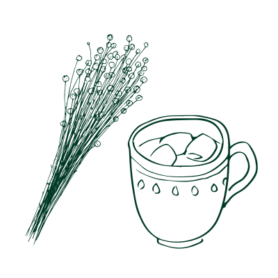

Stomach Ache
Explore those cultural home remedies to see how stomachache can be treated differently.

×

Poland: Vodka Drinks
Vodka drinks (wódka z pieprzem) are a quick remedy with alcohol and pepper in Polish culture that helps treat stomach aches. This drink will have a spicy, intense, and boozy flavor. Though this drink might not be delicious to some people, it helps heat up the body and stimulate digestion. Some folk logic believes that it kills the bacteria in your stomach.
Ingredients:
- Vodka
- Pepper
Steps:
- Pour the vodka into a glass.
- Mix a spoonful of pepper into the vodka.
×

Mexico: Chamomile Tea/Manzanilla
Chamomile tea (Manzanilla) is a traditional herbal remedy in Mexican culture for upset stomach symptoms as it acts as an anti-inflammatory for our digestive system.
Ingredients:
- Fresh/dried chamomile
- Water
- Honey
Steps:
- Prepare 3 cups of water to boil.
- Add a handful of chamomile herbal to the boiling water.
- Cover the water and let it steep for 5 minutes.
- Strain the chamomile flowers, then add some honey to sweeten it.
×
Ethiopia: Telba Drink
Telba drink is a traditional Ethiopian drink made with ground flaxseed. The flaxseed is believed to soothe the digestive system while relieving constipation.
Ingredients:
- Flaxseed powder
- Water
- Honey
- Boiling water
Steps:
- Grind the flax seeds and mix them with a little bit of water until they form a thick paste.
- Add a spoonful of honey to the paste.
- Stir and mix.
- Pour a cup of boiling water into the paste and wait for the drink to cool down.
